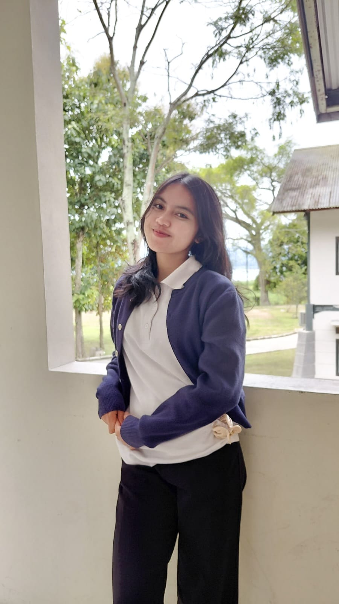

Web Development
Membuat struktur dan tampilan website menggunakan HTML dan CSS.
INFORMATION SYSTEMS STUDENT
Saya adalah mahasiswa aktif S1 Sistem Informasi di Institut Teknologi Del yang memiliki ketertarikan pada teknologi, UI/UX, web development, database, dan multimedia.

01 — ABOUT ME
Saya merupakan mahasiswa aktif S1 Sistem Informasi di Institut Teknologi Del. Saya tertarik mempelajari bagaimana teknologi dapat digunakan untuk menciptakan solusi yang bermanfaat.
Selama perkuliahan, saya mempelajari berbagai bidang seperti pemrograman, database, web development, UI/UX, dan multimedia.
Selain kegiatan akademik, saya juga aktif dalam organisasi dan berbagai project yang membantu saya mengembangkan kemampuan teknis, kreativitas, komunikasi, dan kerja sama.
02 — MY SKILLS
Kemampuan yang saya kembangkan melalui perkuliahan, project, dan kegiatan organisasi.
Membuat struktur dan tampilan website menggunakan HTML dan CSS.
Merancang interface dan pengalaman pengguna untuk aplikasi dan produk digital.
Mempelajari pengelolaan data dan penggunaan SQL dalam sistem informasi.
Membuat kebutuhan visual, desain, dokumentasi, dan media untuk berbagai kegiatan.
Mempelajari pemrograman berorientasi objek menggunakan bahasa Java.
Menggunakan Git dan GitHub untuk mengelola project dan version control.
03 — MY PROJECTS
Beberapa project yang telah saya kerjakan selama perkuliahan dan kegiatan pengembangan kemampuan.
Perancangan aplikasi yang membantu orang tua mendapatkan informasi dan mengelola jadwal imunisasi anak.
Website portfolio pribadi untuk menampilkan profil, kemampuan, pendidikan, pengalaman, dan project.
Project sistem informasi yang menerapkan konsep pemrograman, database, inheritance, JDBC, dan pengelolaan data.
Berkontribusi dalam bidang multimedia Himpunan Mahasiswa Sistem Informasi melalui desain, dokumentasi, dan kebutuhan media kegiatan.
Project perancangan produk digital yang dikembangkan melalui user research, affinity mapping, dan perancangan solusi UI/UX.
Praktikum database yang mencakup SQL, trigger, stored procedure, transaksi, dan validasi data.
Perancangan sistem informasi kantin digital kampus dengan pengelolaan project dan kolaborasi menggunakan tools manajemen project.
04 — EXPERIENCE
Pengalaman organisasi dan kegiatan pengembangan diri selama menjadi mahasiswa.
Berpartisipasi dalam program MySkill Campus Ambassador 2026 untuk mengembangkan kemampuan career development, communication, personal branding, dan content creation.
Aktif berkontribusi dalam bidang multimedia Himpunan Mahasiswa Sistem Informasi melalui desain visual, dokumentasi, dan kebutuhan media kegiatan organisasi.
05 — EDUCATION
S1 Sistem Informasi
Fakultas Informatika dan Teknik Elektro06 — CONTACT
Jika ingin terhubung atau berdiskusi mengenai project, kegiatan mahasiswa, teknologi, maupun kolaborasi, silakan hubungi saya melalui email atau nomor telepon.